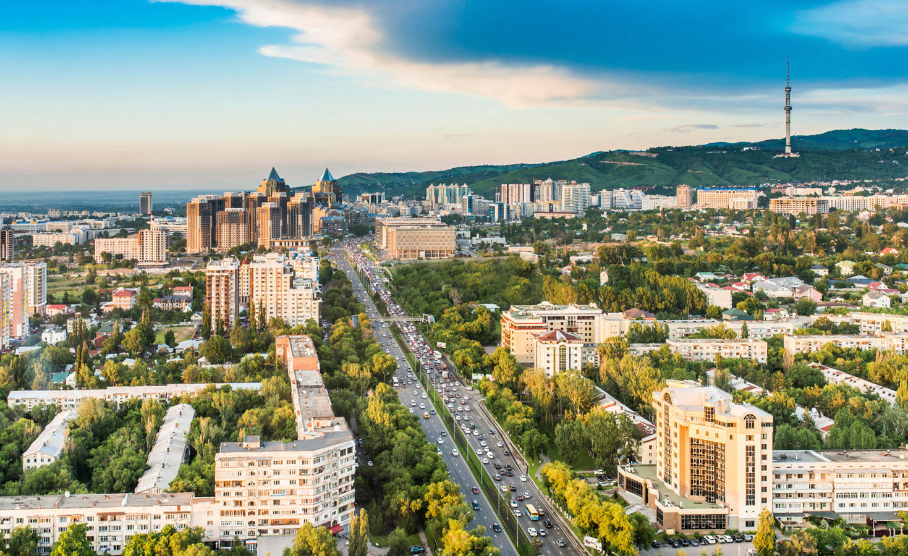

Almaty 2222222222222222


Almaty formerly known as Alma-Ata (Russian: Алма-Ата), is the largest city in Kazakhstan, with a population of about 2 million. It was the capital of Kazakhstan from 1929 to 1997, when the government relocated the capital to Akmola (renamed Astana in 1998, and Nur-Sultan in 2019). Almaty is still the major commercial and cultural centre of Kazakhstan, as well as its most populous and most cosmopolitan city. The city is located in the mountainous area of southern Kazakhstan near the border with Kyrgyzstan in the foothills of the Trans-Ili Alatau at an elevation of 700–900 m (2,300–3,000 feet), where the Large and Small Almatinka rivers run into the plain.
| # | Name | Sity since | Population |
|---|---|---|---|
| 1 | Almaty | 1867 | 1,328,362 |